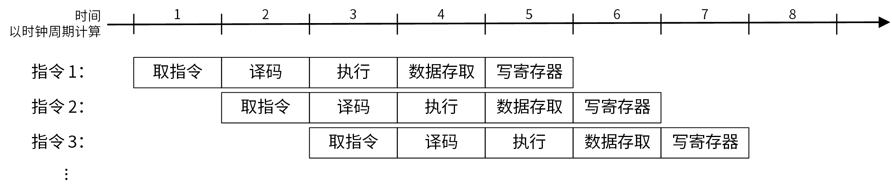
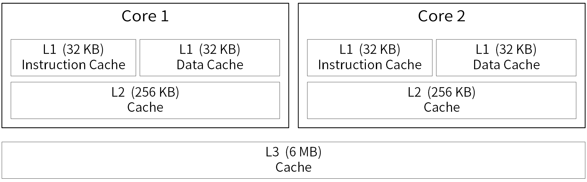

CPU并发编程学习小结
在之前接触 C++ Coroutine 的时候，看到了开源代码中关于内存序(memory order)的使用，于是想要了解一下这个内存序到底是个什么东西。结果发现相关的知识体系非常庞大，想要真正搞懂内存序是怎么来的、有什么用和什么时候用，需要搞清楚的东西根本不是一两天能学会的。本来只是想了解下内存序是什么，结果一不小心从《计算机体系结构》、《操作系统导论》一路学到了并发编程……
这篇文章梳理一下我在探索“内存序是个什么东西”时，学到的与 CPU 并发编程相关的知识，把我以前粗略了解的很多概念全部串起来了。
并发与并行的区别
并发与并行这两个概念很相似，但其实是有区别的。并行的两个任务在某个时间点同时运行，而并发则是在某一段时间内同时运行，在这段时间里两个任务可能是交替进行的。
结合一些例子说明会更好理解：一边打游戏一边喝可乐，如果暂停游戏拿起可乐喝一口再继续游戏，这就是并发；如果打游戏的同时用吸管喝可乐，这就是并行。
并发在一段时间内造成了同时进行多项任务的假象，而并行是真正的同时进行多项任务。
CPU 的并行技术
通常在讨论并发和并行的时候，都是在讨论多线程编程。其实在 CPU 内部也有一些并行技术，它们旨在提高 CPU 性能。在 CPU 设计里，提升 CPU 并行性的方法有两类：一类是允许 CPU 同时执行多条指令的指令级并行技术；另一类是运行 CPU 同时执行多个任务的线程级并行技术。
指令级并行
指令流水线技术可以让 CPU 同时执行多条指令，实现指令级并行。下面简单地说明他的原理，要详细地了解它可以参考《计算机组成与设计：硬件/软件接口》这本书。
对于 MIPS 指令集的 CPU 来说，一条指令的执行可以分为五个步骤：读取指令、指令解码与读取寄存器、执行指令、存储器访问和写回寄存器；
MIPS 指令的格式使得它可以同时进行指令解码与读取寄存器的值。对于其他指令集的处理器，可能不止五个步骤。
在没有流水线的处理器上，上一条指令的这五个步骤要全部执行完，才可以执行下一条指令。在处理器进行指令解码和读取寄存器这个步骤时，读取指令等其他部分的电路是闲置着的。流水线技术就是让其他部分的电路也运转起来，用来执行其他的指令。
用《计算机组成与设计：硬件/软件接口》里的例子来说明，这本书用洗衣服的过程来类比 CPU 的运行过程。洗衣店的工作流程可以分为：洗衣服、烘干衣服、叠衣服和收衣服四个步骤。在烘干衣服的时候，洗衣机、叠衣服的桌子和收衣服的人都是空闲的。如果采用流水线技术，此时可以让洗衣机去洗下一批衣服，等烘干机的工作结束，把衣服放到桌子上去叠衣服，而下一批的衣服也洗好了，正好可以放到烘干机里……
下面这张图展示了指令流水线的工作情况，在同一个 CPU 时钟周期里有多条指令同时执行。

流水线可能会遇到在下一个时钟周期里下一条指令不能执行的情况，这种情况称为冒险（hazard）。流水线冒险有很多种情况，比如跳转指令会导致控制冒险。因为在跳转的条件计算出来之前，CPU 无法确定要继续执行哪里的指令，通常的解决方法是分支预测，让 CPU 猜一个分支继续执行。如何解决流水线冒险不是本文的主题因此不继续展开。
另一种指令级并行的技术是多发射（multi-issue），意思是按顺序地一次获取多条指令并同时执行。实现了这种指令级并行的处理器称为超标量处理器（superscalar processor），标量处理器每个时钟周期最多可以完成一条指令，而超标量处理器一个时钟周期可以完成多条指令（IPC > 1）。
执行单元（Execution units, EUs）是 CPU 中用于执行算数逻辑计算、分支和其他操作的独立模块。执行单元一般包括：算术逻辑单元（ALU）、浮点单元（FPU）、地址生成单元（AGU）等。
多发射是通过让 CPU 拥有多个执行单元实现的，将多条指令分配到不同的执行单元，这样指令就可以被同时执行。
这个技术的实现细节是很复杂的，因为并行执行的多条指令之间不可以有数据依赖。编译器在编译阶段可以分析指令间的数据依赖，通过调整指令的顺序以解决数据依赖问题，而且不会影响程序的执行结果。CPU 在运行阶段也可以检查指令间的数据依赖，通过动态调整指令的执行顺序来解决数据依赖问题，这让 CPU 拥有了乱序执行（out-of-order execution）的特性。
线程级并行
同时多线程（Simultaneous multithreading, SMT）技术可以在单个 CPU 内核上运行多个任务。SMT 名字里的“线程”不一定是同一个进程的线程，可以是两个不同进程的线程。在 Intel CPU 里，它被称为超线程技术（Hyper-Threading, HT），就是那个让一个处理器核心变两个处理器核心的技术。
同时多线程的原理是把闲置的执行单元利用起来，只需要增加一些寄存器和其他部件来保存机器状态，就可以提升 CPU 的并行性能。
操作系统的多任务
计算机的资源（CPU 资源、内存资源或硬盘资源等）由操作系统进行管理，现代操作系统将计算机的物理资源虚拟化处理，比如 CPU 虚拟化和内存虚拟化，让每个程序都以为自己拥有完整的 CPU 和完整的内存。
在只有一个核心的 CPU 上，操作系统依然可以做到同时运行多个程序，其中的原理我相信绝大多数读者都了解过。CPU 资源在时间上被划分，让一个程序使用一段时间的 CPU，然后让下一个程序使用一段时间的 CPU，如此下来，CPU 就被几个程序共享了。
如果要深入了解，推荐阅读人民邮电出版社的《操作系统导论》，原著是《Operating Systems: Three Easy Pieces》，书和翻译都很好。
这种暂停当前程序的执行并切换到另一个程序继续执行的操作，称为上下文切换（Context switch）。上下文切换要保存当前程序的程序计数器（Program Counter, PC）、CPU 当前所有寄存器的值、和内存虚拟化相关的一些值，以及其他，然后恢复另一个程序的程序计数器、寄存器值、内存虚拟化相关的值等等。
虽然看起来上下文切换的开销很大，但是除非进程或者线程很多导致上下文切换很频繁，一般来说不用考虑上下文切换的开销。
多进程和多线程都是实现并发的方法，在可靠性、资源占用、编程难易程度等方面各有优势与不足。
多进程方案在可靠性上有明显优势，多线程程序任意一条线程的异常都会导致整个程序崩溃。Chrome 浏览器和许多有限元分析软件都采用的多进程方案。
多处理器调度的问题
现在的处理器基本都是多核心设计，这其实就意味着计算机实际上是有多个处理器的。对操作系统来说，多处理器的多任务调度（决定何时进行上下文切换的策略）会给程序员带来一些麻烦，下面来讨论这些问题。
缓存亲和性
CPU 寄存器的访问速度很快，与之相比内存的访问速度就慢多了。缓存（Cache）是介于 CPU 寄存器和内存之间的存储器，容量比内存小很多，访问速度比内存快得多。
现代处理器的缓存是多级的，一般分为 L1、L2、L3 三个级别，容量依次增加，访问速度依次降低。L1 级缓存又会被拆分成两块，一块专门用来存储指令，另一块专门用来存储数据。下图展示了三级缓存的结构（缓存大小的数值是随便填的）。

缓存之所以能够起作用，是因为程序的执行具有局部性特征，局部性有两种：时间局部性和空间局部性。
时间局部性：当一个数据被访问后，它很快会被再次访问。比如循环变量
i和循环体的指令本身。空间局部性：当一个数据被访问后，很可能紧接着访问它周围的数据。比如遍历数组和指令的顺序执行。
CPU 在获取数据时会先在 L1 级缓存中寻找，如果没找到，也就是缓存未命中，那么就会到下一级 L2 级缓存寻找，还找不到就从 L3 级缓存寻找，最后从内存中获取数据。
如果频繁遇到缓存未命中，会严重影响 CPU 的运行速度。在编写程序的时候，要考虑到缓存的影响。比如操作系统的多处理器调度策略，要尽可能地让同一个进程保持在同一个 CPU 上。这是因为一个进程运行一段时间后，缓存中维护着该进程的许多状态。当该进程恢复到上一次运行的 CPU 时，缓存就能起作用。
又比如遍历二维数组时，按行遍历和按列遍历的速度是不一样的，按行遍历的速度应该会更快些。
1 | for(int row = 0; row < MAX_ROW; ++row) |
如果指针 data 所指向的内存区域足够大，无法全部装进 L1 缓存中，那么这两种遍历方式的差距将会很大。按列访问每次访问的内存区域跨度很大，很可能会遇到缓存未命中的情况，此时 CPU 不得不去下一级缓存甚至内存中寻找数据，这就降低了效率。用“局部性”的概念来理解，按列访问不符合“空间局部性”的特点，因此缓存无法起到加速作用。
缓存一致性问题
如果有多个处理器，每个处理器有自己的缓存，并且共享同一个内存，那么会出现缓存一致性（Cache Coherence）问题。
假设一个运行在 CPU 1 的程序从内存地址 A读取数据。由于数据不在 CPU 1 的缓存中，所以系统直接访问内存，得到了值 D。程序修改了地址 A 处的值，这个修改体现在只是将它的缓存更新为新的值 D’。由于将数据写回内存比较慢，因此系统通常会稍后再进行回写。假设此时操作系统中断了该程序的运行，并在稍后将其交给 CPU 2 继续运行，程序重新读取地址 A 的数据，由于 CPU 2 的缓存中没有该数据，所以又会直接从内存中读取，结果得到了旧值 D，而不是正确的值 D’。
硬件提供了这个问题的基本解决方案：监控内存访问。在基于总线的系统中，一种方式是使用总线窥探（Bus Snooping）来发现内存访问。如果 CPU 从监听到的内存访问中，发现了对它放在缓存中的数据的更新，那么会根据内存访问，作废（Invalidate）缓存的值，或更新（Update）缓存的值为新的值。
关于其中的细节，可以从缓存一致性协议：MESI 中了解到更多。
这个网站：https://www.scss.tcd.ie/Jeremy.Jones/VivioJS/caches/MESIHelp.htm 提供了一个可交互程序来学习 MESI 协议。
内存一致性问题
在现实世界中，代码几乎总是不按照你编写的顺序来执行。这个结论听起来不可思议，但编译器和 CPU 都会对你编写的代码重新排序，以获得更好的性能。
考虑下面的代码(该例子来自 CppCon2023)，可以注意到它有许多能够优化的地方。
1 | constexpr std::size_t N = 100; |
如果你注意到了变量 N 是 constexpr 的，那么不难发现在 for 循环中的第一行 auto p = get_pivot(N) 变量 p 的结果在每一次循环都是一样的。没有理由在每一次循环都调用 get_pivot，所以一种优化措施是将这一行移动到循环之外。
由于变量 p 的值是固定的，那么 data[p] 的值在每一次循环也是一样的。考虑到乘法运算的开销并不小，与其每一次循环都乘以 data[p]，不如在最后再对 p_sum 乘以 data[p]，因此将它移动到循环外面也是一种很好的优化措施。
在编译器自动地实施上述的优化措施后，编译得到的机器码就与你所写的源代码不再保持一致了，所以编译器会让你的代码不再按照你编写的顺序来执行。
类似的例子还有很多，比如下面的例子。
1 | do_something(); |
对变量 done 的赋值一定发生在 do_something() 的调用之后吗？这两个操作之间并没有数据依赖，所以完全没必要等着 do_something 调用之后再对 done 赋值，编译器可能会把赋值操作优化到函数调用之前来提高性能。
编译器对代码的重新排序是保证不会导致错误结果的，但仅仅在单线程的环境下有这个保证。
下面考虑多线程下的一个情景，线程 1 完成某项任务后通过变量 done 通知另一条线程：1
2
3
4
5
6
7// # Thread 1:
do_something();
done = true;
// # Thread 2:
while(done) ; // spin.
do_something2();
如果线程 1 的代码被编译器重新排序，那么代码所期望的效果就达不到了。线程 2 发现 done 变为 true 的时候，线程 1 的 do_something 可能还没有执行完毕。
所以代码的重新排序在多线程环境下，是会导致程序的结果出错的。
CPU 也不总是按照顺序来执行指令，CPU 的这项特性称为乱序执行 (Out-of-Order execution)。
比如当 CPU 遇到分支的时候，CPU 会进行分支预测，选一条分支继续执行，如果发现分支预测的结果错了，那么就丢弃执行的结果，重新去执行另一条分支。如果经常预测对，可以避免 CPU在判断分支上的停顿，对执行速度会有很大提升。
又比如两条指令之间没有数据依赖，那么现代 CPU 可以并行地执行这两条指令。
现在考虑下面的代码，感受乱序执行带来的影响，其中变量 x1 和 x2 的初始值都是 0。
1 | // # Thread 1: |
由于操作系统的线程调度，上面的四行代码可能会按照任意的顺序执行，比较容易想到的顺序有：
- (1), (2), (3), (4) 输出结果为 01
- (1), (3), (2), (4) 输出结果为 11
- (3), (4), (1), (2) 输出结果为 01
那么，有没有可能输出结果为 10 或者 00 呢？把简单的变量赋值排到函数调用下面可能不是一种好的优化，所以编译器的重新排序优化不一定会进行（我没有反汇编验证过是否一定不重拍）。
但 CPU 可能会考虑到，在内存中更新变量 x2 的值是很慢的操作，如果放松对指令执行结果的顺序的约束，那么在往内存写入新的值的同时，允许执行代码 (2) 和 (4)，性能将会得到提升。
重新捋一下上面描述的情景。为了能够提高性能，CPU 不再保证代码 (1) 执行完毕才去执行代码 (2)，而是同时执行代码 (1) 和 代码 (2)。那么这就导致了一个问题，CPU 在执行代码 (2) 的指令时，x2 = 1 的值可能还没有写入到内存中。此时代码 (4) 读取到的 x2 的值就是 0，类似的，代码 (2) 读取到 x1 的值也可以是 0。这就产生了反直觉的运行结果，输出结果为 00 或者 10。
上面的问题的本质就是，内存操作结果的可见性不再有严格保证，这个问题就称之为内存一致性问题。
同步问题
一些基本概念
考虑一个简单的例子，给变量 counter 加上数字 1，其生成的 x86 代码可能是这样的：1
2
3mov 0x8049a1c, %eax # 将变量 counter 所在内存的值移入寄存器 %eax
add $0x1, %eax # 将寄存器 %eax 的值与数字 1 相加
mov %eax, 0x8049a1c # 将寄存器 %eax 的值移回变量 counter 所在的内存
现在有多个线程（比如说有 10 条线程），循环执行（比如每条线程循环 1000 次）上面的代码。当所有线程都执行完毕，预期的结果是 counter == 10000。但实际上很可能不是 10000 这个结果，甚至每次运行的结果可能都不一样，可能是 9987 或 9876 或别的什么数字。
问题出现在线程的调度上。暂且考虑只有两条线程同时执行上述代码的情况，并将 counter 的初始值设置为 0。
第一条线程（Thread A）刚把 counter 所在内存的值移入寄存器 %eax 中，操作系统就暂停了它的执行，然后让第二条线程（Thread B）开始执行。
Thread B 也做了同样的事情，把 counter 所在内存的值移入寄存器 %eax 中，将寄存器 %eax 的值与数字 1 相加，最后将寄存器 %eax 的值移回变量 counter 所在的内存。Thread B 顺利的执行了完毕了，此时，counter 的值为 1。
然后，操作系统恢复了 Thread A 的执行，但是 Thread A 的 %eax 寄存器中储存的仍然是 counter 的旧值 0。Thread A 在旧值上加 1，再写回内存，Thread A 执行完毕了，但 counter 的值还是 1，错误就这么产生了。
这里展示的情况称为竞态条件（Race condition）：运行结果取决于代码的时间执行。
执行这段代码的多个线程可能导致竞争状态，因此我们将此段代码称为临界区（Critical section）。临界区是访问共享变量（或更一般的说，共享资源）的代码片段，一定不能由多个线程同时执行。
我们真正想要的代码就是所谓的互斥（mutual exclusion）。这个属性保证了如果一个线程在临界区内执行，其他线程将被阻止进入临界区。
这些术语都是由 dijkstra 创造的，他是该领域的先驱。
原子操作
原子化(atomic) 操作：将一系列操作组合在一起，但是只有“全部完成”或“什么都没有发生”两个状态，没有中间状态。这个概念类似于数据库处理中的事务（transaction）。
对于上文中的 counter = counter + 1，如果可以原子化的进行，就不会存在竞态条件了。但存在竞态条件的代码很多，不能指望硬件提供各种各样的原子操作，这难以实现。
实际上只需要硬件提供一些有用的指令，在这些指令上构建一个通用的集合，即所谓的同步原语（synchronization primitive）。通过使用这些硬件同步原语，加上操作系统的一些帮助，就能构建多线程代码，以同步和受控的方式访问临界区，从而可靠地产生正确的结果。
解决同步问题：互斥锁与条件变量
考虑将上文提及的关于 counter 自增 1 的临界区代码加上互斥锁，其代码可能如下：
1 | lock_t mutex; |
互斥锁就是一个变量，如上面代码中的变量 mutex。锁变量保存了锁某一时刻的状态，这个锁要么是可用的（available, unlocked, free），表明没有任何线程持有锁；要么是被占有的（acquired, locked, held），表明有一个线程持有锁，正处于临界区。
调用函数 lock() 会尝试获取锁，如果没有其他线程占有锁，那么当前线程会获得锁并进入临界区，此时当前线程被称为锁的持有者(owner)。如果其他线程正占有锁，那么这个调用不会立刻返回。直到持有锁的线程调用 unlock() 释放锁，这个调用才会返回。
锁为程序员提供了最小程度的调度控制。通过给临界区加锁，可以保证临界区内只有一个线程活跃。锁将原本由操作系统调度的混乱状态变得更为可控。
评价锁
上面仅仅是介绍了锁的两个基本语义，并未涉及到锁的具体实现。下面罗列一些评估锁实现效果的标准，以便比较各种锁的实现效果。
- 锁是有效性。锁能否阻止多个线程进入临界区？
- 锁的公平性。当锁可用时，是否每一个竞争线程有公平的机会抢到锁？是否有竞争锁的线程会饿死(starve)，一直无法获得锁？
- 锁的性能。使用锁之后增加的时间开销。有几种场景需要考虑，一种是没有竞争的情况，即只有一个线程抢锁、释放锁的开支如何？另一种是一个 CPU 上多个线程竞争，性能如何？最后一种是多个 CPU、多个线程竞争时的性能。
控制中断
最早提供的互斥解决方案之一，就是在临界区关闭中断。这个方案只适用于单处理器系统，关闭中断后代码就不可能被打断执行了。
但这种方案的缺点很多：
- 机制容易被滥用。极端的例子：一个恶意程序从运行就获取锁，然后再也不释放，操作系统将失去控制权。
- 不支持多处理器。如果多个线程运行在不同的处理器， 那么关闭中断也没用。
- 关闭中断导致中断丢失，后果严重。比如错过硬盘设备完成读取请求的中断，操作系统就无法唤醒等待读取的进程。
- 效率低下。开启关闭中断的操作执行的较慢。
Peterson 算法
Peterson 算法是一种不依赖原子操作（这需要硬件支持）的纯软件实现的锁方案，它只支持两条线程的互斥访问。下面是它的实现代码，注意它无法在松散内存一致性模型上正常工作：
1 | int flag[2]; |
要理解它的原理，可以先假设两个运行场景，分别进行分析：两条线程严格地按顺序调用 lock() 以及两条线程竞争调用 lock() 的情况。
如果两条线程严格地按先后顺序分别调用 lock()，即第二条线程在第一条线程调用返回后（获得锁之后）再调用 lock()，在这种情况下进行分析是很容易的。第二条线程会进入自旋循环，直到第一条线程调用 unlock() 后，使得 flag[1 - self] == 1 的条件不再满足，从而跳出自旋，调用返回，进入临界区。这说明该算法实现的锁，竞争的线程不会被饿死。
如果两条线程竞争地调用 lock()，可以先找出其中的竞态条件，容易发现竞态条件存在于 turn = 1 - self。这导致在两条线程同时调用 lock() 时，变量 turn 的值可能是 self 也可能是 1 - self，即可能是 0 也可能是 1。注意到此时 flag[0] == flag[1] == 1 总是成立，因此自旋循环的第一个条件始终满足。而第二个条件则不一定满足，但至少有一条线程满足，从而进入自旋循环。
上述粗糙的推理说明该算法实现的锁是有效的，且保证竞争的线程不会被饿死。
自旋锁
在实现锁时，一个简单的想法是：用一个变量(flag)来标志锁是否被占有，如果锁被占有(flag == 1)则自旋等待，直到锁被释放（flag == 0）则跳出自旋，并重新占有锁(flag = 1)。这种简单的想法所实现的锁称为自旋锁(Spin lock)。
代码实现类似：
1 | typedef struct lock_t { int flag; } lock_t; |
但上述的代码是无法让自旋锁正确工作的。如果让多条线程交替执行，很容易构造出一种调度方案，使得两条线程同时获得锁并进入临界区。想象有 3 条线程，其中一条线程持有锁，并即将释放锁，而另外两条线程正在自旋等待锁。当锁被释放时，如果另外两条正在自旋的线程依次跳出自旋（这样的调度情况显然存在），就会导致有两条线程同时持有锁并进入临界区。
上述代码无法正确工作的本质原因就是存在竞态条件，如果能让“测试锁是否被占有”与“占有锁”这两个步骤原子地进行，消除竞态条件，就能正常工作了。利用硬件提供的同步原语，可以实现这一点。
TestAndSet
下面的代码展示了 TestAndSet 指令做了什么：1
2
3
4
5int TestAndSet(int *old_ptr, int new) {
int old = *old_ptr; // fetch old value at old_ptr
*old_ptr = new; // store 'new' into old_ptr
return old; // return the old value
}
它返回 old_ptr 指向的旧值，同时将其更新为 new 这个新的值，关键的是它们是原子地执行。利用它重新实现自旋锁的代码如下：
1 | typedef struct lock_t { |
CompareAndExchange
CompareAndExchange 指令做的事情类似于下面的代码：1
2
3
4
5
6int CompareAndExchange(int *ptr, int expected, int new) {
int actual = *ptr;
if(actual == expected)
*ptr = new;
return actual;
}
比较并交换的基本思路是检测 ptr 指向的值是否和 expected 相等；如果是，更新 ptr 所指的值为新值。否则，什么也不做。不论哪种情况，都返回该内存地址的实际值，让调用者能够知道执行是否成功。
使用比较并交换实现的 lock() 函数：1
2
3
4void lock(lock_t *lock) {
while(CompareAndSwap(&lock->flag, 0, 1) == 1)
; // spin-wait
}
Link-Load & Store-Conditional
链接的加载（load-linked）和条件式存储（store-conditional）的配合使用也可以实现锁。
链接的加载和典型的加载指令类似，都是从内存中取出值存入一个寄存器。
条件式存储指令只有在上一次加载的地址没有更新时，才会成功。成功时，条件存储返回 1，并更新值。失败时，返回0，并且不会更新值。
用这两条指令实现的 lcok() 函数：1
2
3
4void lock(lock_t *lock) {
while(LoadLinked(&lock->flag) || !StoreConditional(&lock->flag, 1)) // 注意条件短路
; //spin-wait
}
评价自旋锁
现在按照之前罗列的标准来评价自旋锁。
首先，正确性。毫无疑问，自旋锁是正确的锁。
然后，公平性。自旋锁不提供任何公平性保证，可能导致饿死。比如三条线程竞争锁，其中两条线程轮番获得锁，而另一条线程永远在自旋。
最后，性能。在单 CPU 的情况下，自旋锁性能开销相当大。假设一条线程持有锁，调度器运行其他的每一个线程时，它们都在自旋，使得任务没有任何进展。在多 CPU 上，如果线程数大致等于 CPU 数，性能表现不错。
Ticket锁
Ticket 锁是使用硬件原语 FetchAndAdd 指令实现的。FetchAndAdd 能原子地返回特定地址的旧值，并且让该值自增一。
Ticket 锁的代码实现如下：1
2
3
4
5
6
7
8
9
10
11
12
13
14
15
16
17
18
19
20
21
22
23
24
25int FetchAndAdd(int *ptr) {
int old = *ptr;
*ptr = old + 1;
return old;
}
typedef struct lock_t {
int ticket;
int turn;
} lock_t;
void lock_init(lock_t *lock) {
lock->ticket = 0;
lock->turn = 0;
}
void lock(lock_t *lock) {
int myturn = FetchAndAdd(&lock->ticket);
while(lock->turn != myturn)
; // spin-wait
}
void unlock(lock_t *lock) {
FetchAndAdd(&lock->turn);
}
不同于自旋锁，Ticket 锁保证所有线程都能抢到锁，只要一个线程获得了 Ticket 值，它最终会被调度。
解决自旋太多
不必要的自旋是在浪费 CPU 时间，有两种避免自旋的方法：
- 让出时间片。yield 原语可以让线程主动放弃 CPU，让其他线程进行。
- 休眠代替自旋。维护一个队列，如果锁不可用，则休眠并加入队列；当锁的持有者释放锁时，从队列中恢复一条线程的执行。
让出时间片的方案虽然避免了自旋，但是上下文切换的开销没法避免，而且也没能避免饿死的情况。
以休眠代替自旋的方案则没有这两个问题，但是具体实现上需要小心竞态条件。
更多细节阅读 《操作系统导论》 Section 28.14。
二阶段锁
两阶段锁（Two-phase lock）意识到自旋可能很有用，尤其是在很快就要释放锁的场景。因此，两阶段锁的第一阶段会先自旋一段时间，希望它可以获取锁。但是，如果第一个自旋阶段没有获得锁，第二阶段调用者会睡眠，直到锁可用。
条件变量
该部分内容有待完善…
使用互斥锁导致的问题
死锁
死锁(Deadlock)是类似这样一种情况：
- 有 2 个线程同时执行，并且都需要访问共享资源 A 以及共享资源 B；
- 线程 1 获得了共享资源 A 的锁，线程 2 获得了共享资源B的锁；
- 线程 1 尝试获得共享资源 B 的锁，但是因为这个锁已经被线程 2 占有，因此它失败了，进入休眠状态；
- 类似的，线程 2 尝试获得共享资源 A 的锁，因为锁已经被线程 1 占有，因此也休眠了；
最后，两条线程都进入了休眠状态，系统的执行不再有进展，形成了死锁。
我在查阅资料时，注意到了形成死锁的四个条件（禁止抢占、持有和等待、互斥、循环等待），因此避免死锁的方法就是破坏这四个条件之一。
但我感觉根据那四个条件来解决死锁等于没说。我认为比较合适的预防死锁的方式是：当需要获得多个资源的锁时，获取锁的顺序应当保证全局一致。
活锁
活锁(Livelock)与死锁类似，处于活锁状态的系统虽然有任务在执行，但是依然没有任何推进。以下是一个可能导致活锁的情况：
- Thread A 尝试获取 Resource X 的锁。
- Thread B 尝试获取 Resource Y 的锁。
- Thread A 发现 Resource X 的锁已经被 Thread B 获取，它释放 Resource X 的锁并等待。
- Thread B 发现 Resource Y 的锁已经被 Thread A 获取，它释放 Resource Y 的锁并等待。
- Thread A 和 Thread B 同时重新尝试获取资源的锁。
- 重复步骤 3 和步骤 4 。
在这个例子中，Thread A 和Thread B 由于竞争资源而无法进展，导致它们不断尝试重新获取资源的锁，但最终都无法成功。这种情况下，线程们一直在等待对方释放资源，而没有任何一个线程能够进一步执行，形成了活锁。
为了解决活锁问题，可以使用一些策略，如引入随机性的等待时间、重新尝试获取资源的锁的顺序调整或者引入一个调度策略来打破竞争的循环，以确保线程能够顺利地获取资源并继续执行。
优先级反转
任务可以分优先级，在调度时，高优先级的任务在需要执行时可以打断低优先级任务的执行。优先级反转是这样一种情况：
- 有 3 个线程，优先级由高到低分别是：线程 1、线程 2、线程 3；
- 有一个共享资源，线程 1 与线程 3 需要访问这个共享资源；
- 最低优先级的线程 3 持有共享资源的锁，正在执行；
- 线程 1 打断了线程 3 的执行，但是因为未获得锁，休眠了；
- 线程 2 获得了时间片，得以执行；
- 线程 3 继续执行，并释放了锁；
- 最高优先级的线程 1 终于可以执行；
上述的过程中，虽然线程 1 有着最高优先级，但实际上却是最后才能执行，这样的情况就是优先级反转（Priority Inversion）。
无阻塞算法
没学会…
无阻塞算法（Non-blocking algorithm）常被称为“无锁编程”。无锁编程常被理解为“没有使用互斥锁的编程算法”，这个理解是正确的，因为只要使用了锁就不会是无阻塞算法，但没有反映出“无阻塞”的本质。
wait-free、lock-free 和 obstruction-free。
其中 lock-free 指的是不会导致总体任务进度被锁住（lock up）的算法，而不是不用互斥锁的算法。
ABA 问题
基于事件的并发
未完待续…
总结
有许多关于并发编程的内容来自于《操作系统导论》，这是我当时阅读这本书时意想不到的。
更新记录
- 2023-07-15: 完成后半部分；
- 2022-08-22: 只完成了小部分内容；
CPU并发编程学习小结